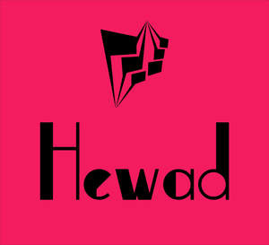

Trade Mark Journal No.2025/015 11 April 2025
UK00004180323 27 March 2025 (9,21,31,34)

- Class 9
- Mobile phone chargers; Chargers for cell phone; Mobile phone straps; Mobile phone battery chargers; Cell phone straps; Cell phone battery chargers; Cell phone battery chargers for use in vehicles; Mobile phone connectors for vehicles; Chargers for mobile phones; Mobile phone covers; Hands-free kits for cell phones; Mobile phone speakers; Phone plugs; Battery chargers for mobile phones; Mobile phone cases; Straps for telephone handsets; Hands-free headsets for cell phones; Chargers for mobile telephones; Cell phone covers; Selfie sticks used as smartphone accessories; Lanyards for cell phones; Mobile telephone batteries; Mobile phone ring holders; Hands-free microphones for cell phones; Cell phone cases; Straps for mobile phones; Mobile phone screen protectors; Hands-free holders for cell phones; Straps for mobile telephones; In-car telephone handset cradles; Devices for hands-free use of mobile phones; Battery chargers for use with telephones; Wireless headsets for mobile phones; Earphones for cellular telephones; Headsets for mobile telephones; Holders for cell phones; Dashboard mounts for mobile phones; Headphones for smart phones; Wireless headsets for use with mobile telephones; Mobile phone docking stations.
- Class 21
- Food containers for pet animals; Pet feeding dishes; Household containers for storing pet food; Dog food scoops; Pet feeding bowls; Containers for bird food; Litter trays for pet animals; Pet feeding and drinking bowls; Pet drinking bowls; Plastic containers for dispensing food to pets; Litter scoops for use with pet animals; Brushes for grooming pet animals; Electronic pet feeders.
- Class 31
- Pet food; Food (Pet -); Pet food for dogs; Pet rabbit food; Pet food for birds; Dog food; Pet foods; Cat food; Pet foodstuffs; Animal food; Food for dogs; Food for cats; Pet beverages; Food for animals; Hamster food; Food for goldfish; Rabbit food; Pet animals; Bird food; Food for racing dogs; Pet foods in the form of chews; Edible pet treats; Food preparations for dogs; Food preparations for cats; Edible food for animals for chewing; Fish food; Food for fish; Food products for animals; Food for rodents; Food for birds; Oat-based food for animals; Cattle food; Pet birds; Food for aquarium fish; Beverages for pets; Edible silvervine powder for pet cats; Fish meal [animal feed]; Foods flavoured with chicken for feeding dogs; Foods flavoured with chicken for feeding cats; Fish meal for animal consumption; Foods containing chicken for feeding dogs; Canned foods for dogs; Foodstuff for dogs; Wheat proteins for animal food; Foods flavoured with beef for feeding dogs; Foods flavoured with beef for feeding cats; Animal beverages.
- Class 34
- Electronic cigarettes; Electronic cigarette cartomizers; Electronic cigarette atomizers; Liquid for electronic cigarettes; Smoking sets for electronic cigarettes; Flavorings, for use in electronic cigarettes; Cartridges for electronic cigarettes; Liquids for electronic cigarettes; Flavourings for use in electronic cigarettes; Tobacco tar for use in electronic cigarettes; Electronic cigars; Cases for electronic cigarettes; Electronic cigarettes for use as an alternative to traditional cigarettes; Electronic cigarette liquid [e-liquid] comprised of flavorings in liquid form used to refill electronic cigarette cartridges; Electronic cigarette liquid [e-liquid] comprised of flavourings in liquid form used to refill electronic cigarette cartridges; Liquid nicotine solutions for use in electronic cigarettes; Liquid nicotine solutions for electronic cigarettes; Liquid solutions for use in electronic cigarettes; Electronic hookahs; Electronic smoking pipes; Refill cartridges for electronic cigarettes; Replaceable cartridges for electronic cigarettes; Cigarette tobacco; Cigarette lighters; Electronic nicotine inhalation devices; Cigarettes; Cigarette paper; Chemical flavorings in liquid form used to refill electronic cigarette cartridges; Chemical flavourings in liquid form used to refill electronic cigarette cartridges; Cigarette papers; Personal vaporisers and electronic cigarettes, and flavourings and solutions therefor; Smokeless cigarette vaporizer pipes; Electronic shisha pipes; Electronic devices for the inhalation of nicotine containing aerosol; Cigarette packets; Cigarette tubes; Cartridges sold filled with chemical flavourings in liquid form for electronic cigarettes; Cigarette boxes; Cartridges sold filled with chemical flavorings in liquid form for electronic cigarettes; Lighters for smokers [cigarette lighters] [not for automobiles]; Cigars for use as an alternative to tobacco cigarettes; Electronic cigarette liquid [e-liquid] comprised of vegetable glycerin; Electronic cigarette liquid [e-liquid] comprised of propylene glycol; Portable cigarette ash pouches; Cigarette lighters of precious metal; Inhalers for use as an alternative to tobacco cigarettes; Cigarette filters; Filters (Cigarette -); Cigarette holders; Cigarette rolling papers.
OBAID REHMAN